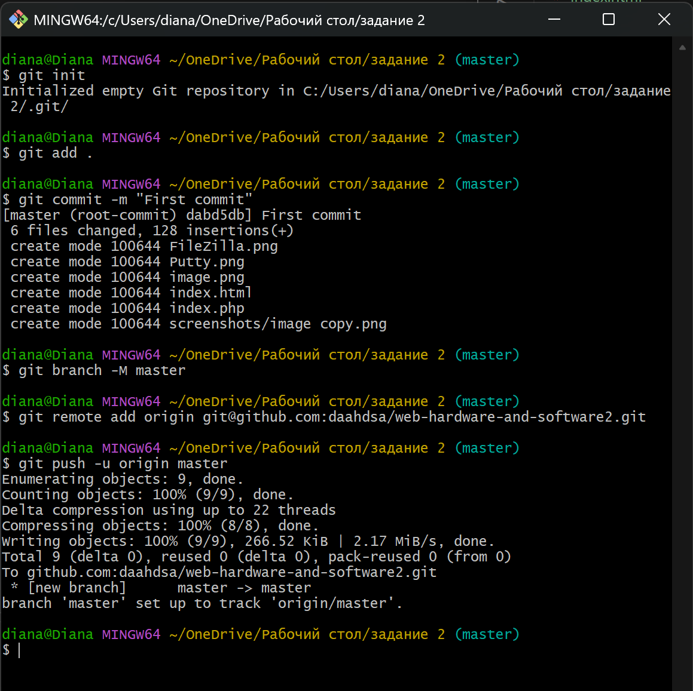

Отчет по выполнению задания №2
Залить файлы в каталоге files на веб-сервер через GIT. Проверить загрузку файлов в браузере из вашего учебного домена. Проверить работоспособность index.php.
Скриншот 1: Из папки files были перенесены все файлы в папку задания

Скриншот 2: инициализация локального репозитория с помощью GitBach, добавление файлов и отправка файлов на GitHub

Скриншот 3: клонирование репозитория на веб-сервер через PuTTY, создание каталога ~/www/lab2

С помощью программы telnet или Putty выполнить задания отправкой HTTP-запросов к веб-серверу:
Скриншот 4: использование PuTTY в режиме Raw для отправки запросов.

1. Получить главную страницу методом GET в протоколе HTTP 1.0;
Скриншот 5: отправка запроса GET / HTTP/1.0 и вывод стандартной страницы Apache

2. Получить внутреннюю страницу методом GET в протоколе HTTP 1.1;
Скриншот 6: Получение внутренней страницы index.php из каталога /lab2/ по протоколу HTTP/1.1 через запрос GET /lab2/index.php HTTP/1.1

3. Определить размер файла file.tar.gz, не скачивая его;
Скриншот 7: определение размера файла file.tar.gz через запрос HEAD /lab2/file.tar.gz HTTP/1.1 . Размер файла указан в поле content-lendth

4. Определить медиатип ресурса /image.png;
Скриншот 8: Определение MIME-типа изображения image.png через запрос HEAD /lab2/image.png HTTP/1.1

5. Отправить комментарий на сервер по адресу /index.php;
Скриншот 9: Отправка комментария на сервер через POST /lab2/index.php HTTP/1.1

6. Получить первые 100 байт файла /file.tar.gz;
Скриншот 10: Получение первых 100 байт файла /file.tar.gz через запрос GET /file.tar.gz HTTP/1.1 и диапазоном Range: bytes=0-99

7. Определить кодировку ресурса /index.php.
Скриншот 11: Определение кодировки ресурса index.php запросом HEAD /index.php HTTP/1.1